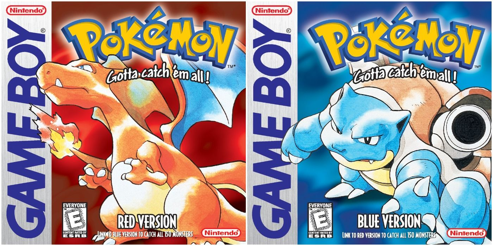
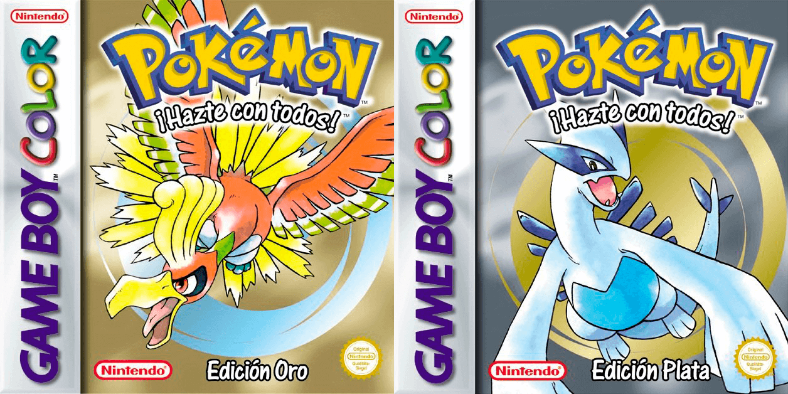
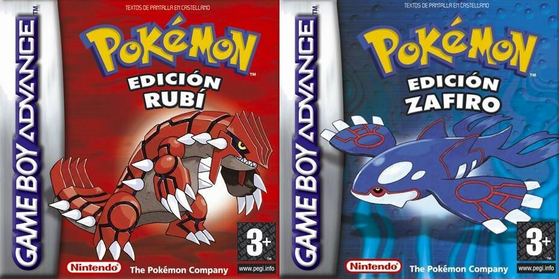
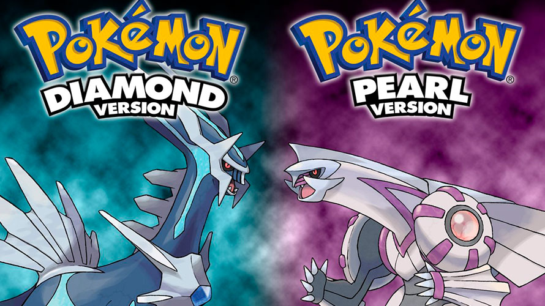
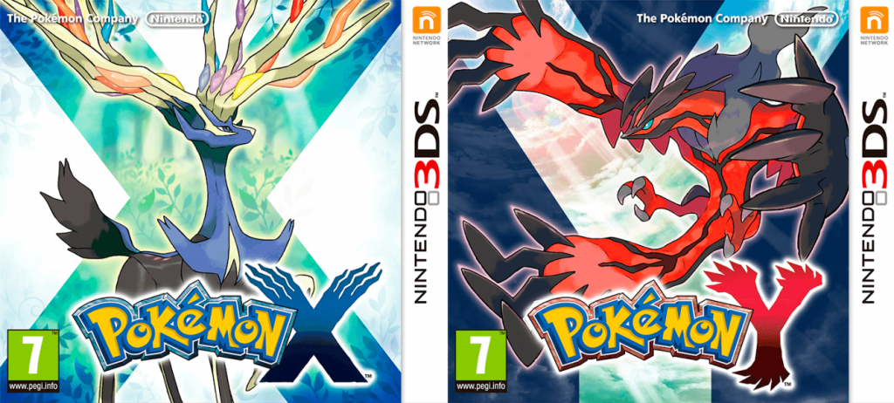
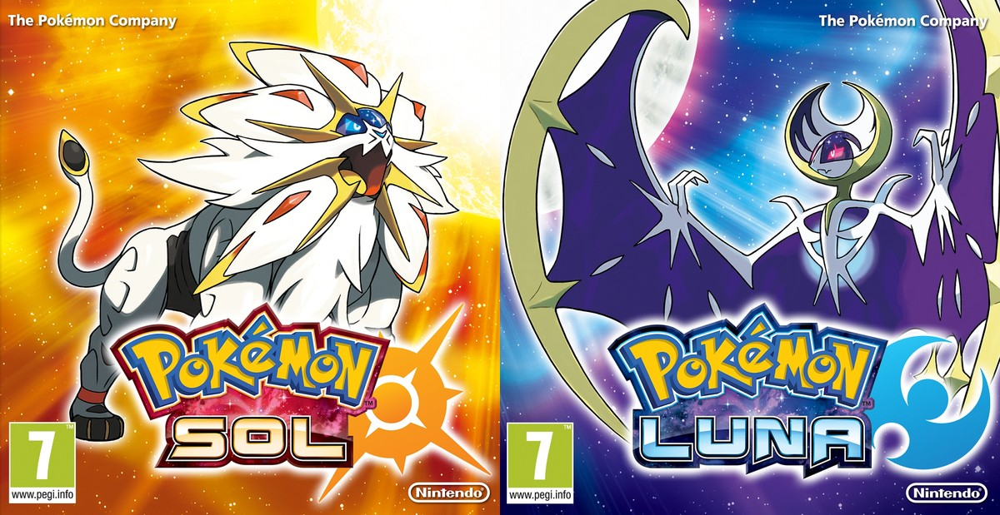
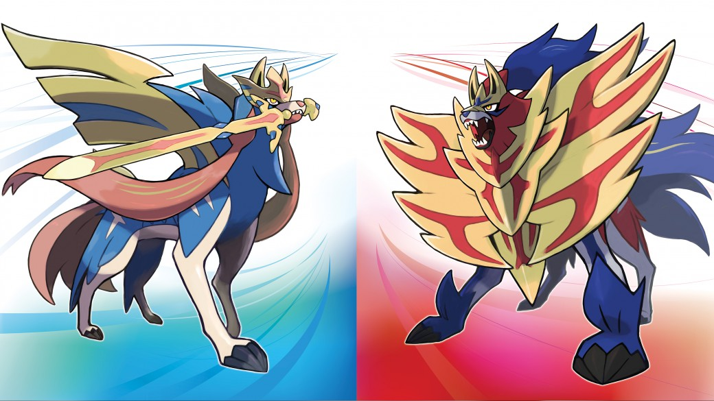

Videojuegos
Los videojuegos son otro pilar importante de la franquicia, pues Pokémon es una de las franquicias más rentables en la actualidad. Desde 1996 hasta la fecha se siguen lanzando videojuegos, algunos de la saga principal, otros spin-offs, pero los que tienen mayor importancia es la saga principal, pues fue la que lo inició todo
Primera generación: Pokemon Rojo y Pokemon Azul
Los videojuegos de Pokémon originalmente fueron de estilo RPG para la consola portátil Game Boy que consistía en ayudar al profesor Oak en su investigación atrapando a todos los Pokémon existentes (151), y luchar contra entrenadores de toda la región para convertirse en el mejor entrenador Pokémon de la región Kanto. Salieron dos versiones con Pokémon exclusivos de cada una, Pokémon Rojo y Pokémon Azul , para tener así que intercambiar entre ambas versiones para conseguirlos a todos. Además, se podía pelear entre amigos con dos consolas conectadas con el Cable Link. Con el éxito de estos primeros videojuegos salió una nueva versión, Pokémon Amarillo, un poco más cercana a la serie animada de televisión. Estos juegos entrarían en lo que se conoce como primera generación. Estos primeros juegos mantienen una jugabilidad simple, creas un equipo de 6 Pokémon, los entrenas para conseguir medallas y participar en la liga Pokémon.
Segunda generación: Pokemon Oro y Pokemon Plata
Con el éxito de ventas, aparecieron juegos de lo que se conoce como segunda generación, Pokémon Oro, Pokémon Plata y Pokémon Cristal para la nueva consola Game Boy Color en los que se agregaron 100 nuevas especies Pokémon a las 151 existentes. Los videojuegos se desarrollaron en una nueva región, Johto, en la que se podía visitar la región Kanto habiendo compatibilidad con los videojuegos anteriores. El mismo objetivo pero una historia diferente, con nuevos protagonistas y personajes.
Tercera generación: Pokémon Rubí y Pokémon Zafiro
En la tercera generación se dio el salto a la consola Game Boy Advance. Con las ediciones Pokémon Rubí y Pokémon Zafiro y posteriormente con Pokémon Esmeralda y con una nueva tecnología que permitía mejores gráficos, y una nueva sensación al jugar. Sin embargo, se perdió completamente la compatibilidad con versiones anteriores, por lo que los videojuegos de primera y segunda generación quedaron aislados para siempre. Se agregaron 135 nuevas especies resultando en una suma de 386 Pokémon que capturar y una nueva región por explorar, Hoenn. Sin embargo, la gran mayoría de especies que aparecieron en generaciones anteriores no aparecían en estos juegos, hasta que salió una reedición de los primeros juegos, Pokémon Rojo Fuego y Pokémon Verde Hoja que añadió la posibilidad de conseguirlos.
Cuarta generación: Pokémon Diamante y Pokémon Perla
En el año 2006 llegó la cuarta generación, donde los videojuegos Pokémon Diamante y Pokémon Perla , y posteriormente Pokémon Platino son para Nintendo DS, con el mismo objetivo pero con 107 nuevas criaturas, dando un total de 493 Pokémon existentes y la nueva región, Sinnoh. También forman parte de esta generación Pokémon Battle Revolution para Wii, parecido a Pokémon Colosseum pero compatible con los anteriores; PokéPark un juego para Wii en el que únicamente podrás manejar a Pikachu; Pokémon Mundo misterioso: Exploradores del tiempo y Exploradores de la oscuridad y Pokémon Mundo misterioso: Exploradores del cielo en el que viajarás por nuevas mazmorras; Pokémon Ranger: Sombras de Almia en el que podrás capturar nuevos Pokémon y viajarás por la nueva región de Almia y también Pokémon Ranger: Trazos de Luz en el que viajarás por la región de Oblivia y podrás capturar más Pokémon que no habían aparecido.
Quinta generación: Pokémon Blanco y Pokémon Negro
En el año 2010, se anunció la quinta generación con dos nuevos juegos: Pokémon Negro y Pokémon Blanco, que dieron lugar a la nueva región Teselia, en la cual se introdujeron 156 nuevos Pokémon, con los que se llegó a un total de 649 especies diferentes. El objetivo de estos juegos no es otro más que atraparlos a todos y ser el mejor. Poco después de la salida de Pokémon Negro y Pokémon Blanco, se anuncia Aprende con Pokémon: Aventura entre las teclas, un juego de la quinta generación orientado a un público infantil; y también Pokémon Card Game: How to Play DS, un juego parecido al Pokémon Trading Card Game pero educativo; más tarde salió Pokémon Conquest, un juego ambientado en el Japón feudal (que no llegó a Europa); también se anunció en septiembre la nueva edición de Pokémon Mundo misterioso: Portales al infinito, que fue para Nintendo 3DS. También han salido aplicaciones para la Nintendo 3DS como la Pokédex 3D, el RAdar Pokémon, y la Pokédex 3D Pro, una versión nueva en la que salen las nuevas formas y todos los Pokémon de otras regiones. Además, se estrena la decimocuarta película de Pokémon en los cines japoneses en junio y julio del 2011, que además es dual: son 2 películas con el mismo argumento en la que en una el protagonista es Reshiram y en la otra es Zekrom.

Sexta generación: Pokémon X y Pokémon Y
Fue anunciada oficialmente durante el Pokémon Direct, en simultáneo en todo el mundo y en diferentes idiomas, el día 8 de enero de 2013 por el mismísimo Satoru Iwata, presidente de Nintendo. Días atrás, se reveló al final de un comercial de Pokémon Negro 2 y Pokémon Blanco 2 que el 8 de enero, en el evento Pokémon Direct, se haría un anuncio importante que revolucionaría la franquicia. Esta generación debuta con los videojuegos en 3D Pokémon X y Pokémon Y y Pokémon Rubí Omega y Pokémon Zafiro Alfa para Nintendo 3DS. Unas de sus novedades son los gráficos en 3D totalmente renovados y diferentes a cualquier juego anterior de la franquicia. Se añaden los patines como nueva forma de desplazamiento, las megaevoluciones, la región de Kalos y se introdujeron 72 nuevos Pokémon sumando un total de 721 de especies diferentes, siendo así la generación en la que menos Pokémon se han introducido hasta el momento. Otra gran novedad es el la introducción de un nuevo tipo, el tipo hada.
Séptima generación: Pokemon Sol y Pokémon Luna
Fue anunciada oficialmente durante el Pokémon Direct del 26 de febrero del 2016, cuando se anunciaron los juegos para el 3DS Pokémon Sol y Pokémon Luna. Esta generación implementa características nuevas como los movimientos Z, el recorrido insular, las formas regionales, entre otras. Además, introduce 88 nuevos Pokémon provenientes de la región Alola, aumentando el total a 809 especies descubiertas. Al año siguiente, el día 17 de noviembre del 2017, salen a la venta los juegos Pokémon Ultrasol y Pokémon Ultraluna, trayendo con ellos como novedad 4 nuevos ultraentes y un Pokémon singular, la posibilidad de que los jugadores visiten el Ultraespacio y combatan a antiguos antagonistas presentes en el Team Rainbow Rocket tales como Giovanni, Magno, Aquiles, Helio, Ghechis, Lysson y Fabio. Además de nuevas formas en Pokémon como Lycanroc, Pikachu y Necrozma.
Octava generación: Pokémon Espada y Pokémon Escudo
Fue anunciada oficialmente durante el Pokémon Direct del 27 de febrero del 2019, cuando se anunciaron los juegos para la consola híbrida Nintendo Switch: Pokémon Espada y Pokémon Escudo , los cuales salieron a la venta el 15 de noviembre del 2019 y su historia se desarrolla en la región de Galar. Además, se introdujeron 89 nuevos Pokémon, aumentando el total de especies a 898. En estos juegos se implementan características como los fenómenos Dinamax, Gigamax, entre otros. Así como la introducción de nuevas formas regionales.